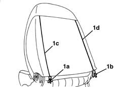
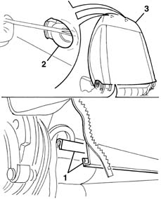
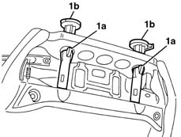
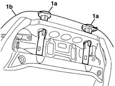

7045B06 GUIDE BUSH for (one), front seat head restraint left or right - R.R.
- Path
- Procedures > 70 FITTINGS > 7045 FRONT SEATS > 7045B front seat head restraint/arm rest > 7045B06 GUIDE BUSH for (one), front seat head restraint left or right - R.R.
- Kind
- repair procedure (removal / refitting; the operation number is the code)
- Applies to
- all engines; all production periods
- Interactive page
- https://sloeber94.github.io/elrnDB-lYpsln/en/#/2429626
Applies to: all engines; all production periods
Applies to: all engines; all production periods
 Removing
Removing
 Refitting
Refitting7045A44 seat interior guard - r r
7045A56 LEVER controlling DRIVER'S seat height adjustment device - R.R .
7045A43 seat exterior guard - r r
7045B10 l/h or r/h front seat head restraint - r+r
7045A48 LEVER and TRIM for folding backrest - R.R.
1. Open the hinges (1a) and (1b) along sections (1c) and (1d).

Applies to: all engines; all production periods
1. Disconnect the lower two ends of the backrest cover connected to one another.
2. Release the backrest cover from the head restraint bushes.
3. Remove the backrest cover and upholstery.

Applies to: all engines; all production periods
1. Release the retainers (1a) and remove the head restraint bushes (1b).

Applies to: all engines; all production periods
Refitting
RemovingCheck that the bushes are intact and show no signs of damage.
Fit the upholstery complete with cover.
1. Position the head restraint bushes (1a) attaching the cover (1b).

Applies to: all engines; all production periods
Connect the lower two ends of the backrest cover to each other.
Mould the cover perfectly and close the hinges.
7045A48 LEVER and TRIM for folding backrest - R.R.
7045B10 l/h or r/h front seat head restraint - r+r
7045A43 seat exterior guard - r r
7045A56 LEVER controlling DRIVER'S seat height adjustment device - R.R .